API Tools |
| API Tools Javadoc tag visibility matches Java Language Specification |
API Tools supports API restrictions using Javadoc tags such as
@noextend and @noreference. The API Tools builder has an option to add problem markers for invalid use of the tags. The
logic to check whether a tag is valid has been upgraded and now follows the visibility rules in the
Java Language Specification (JLS).
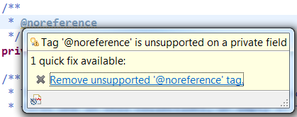
|
| API Tools moved to JavaSE-1.6 |
All API Tools plug-ins now have a bundle required execution environment (BREE) of JavaSE-1.6.
|
| Annotation support in API Tools |
API Tools now provides support for using annotations to describe your API usage. Prior to the new annotation support you would have, for example,
used the @noreference Javadoc tag to indicate noone should use the tagged type / member. Now you can add the @NoReference
annotation (in Java 1.5+ source) to the member directly without the need for Javadoc.
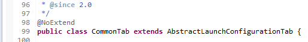
To make the transition from Javadoc tags to the new annotation support, API Tools provides a conversion wizard that is found
using the Plug-in Tools > Convert API Tools Javadoc tags... command for a selected project. The wizard can convert all existing Javadoc tags to their annotation
equivalent, update the build.properties file and optionally remove all of the old Javadoc tags.

|
| Java 8 support for API Tools complete |
API Tools now has full support for Java 8. This includes illegal use, binary comparisons, restriction validation (for both
javadoc tags and annotations), and completion proposals. Support has been added for the following code structures:
- Default Methods
- Type Annotations
- Lambda Expressions
- Method References
There is also a new JavaSE-1.8 execution environment fragment available. Update the API Tools Execution
Environment Descriptions feature. API tools now uses the 5.0.1 release of ASM to read Java 8 class files.
|
Views and Editors |
| Display target platform in the status bar |
You can now have target platform information displayed in the workbench status bar. The active target
name is shown, and the icon reveals problems with the target platform (if any).
Double-clicking on it will open the Target Platform preference page.
This feature can be enabled on the
General > Plug-in Development preference page.
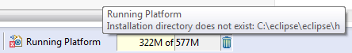
|
| PDE UI tracing options available |
The tracing options provided by PDE UI can now be enabled from the General > Tracing preference page:
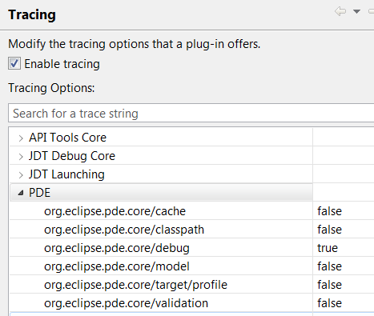
You can choose to have the output of debug trace statements being written to a file or
sent to the standard output stream.
|
| Feature selection dialog filters by plug-ins |
When entering text into the filter field of the feature selection dialog, features that contain a plug-in matching
the filter will be returned. This provides a quick way to add the correct feature to include in a product.
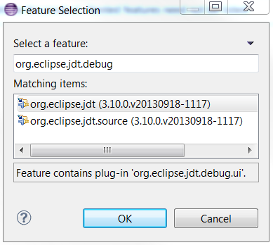
|
| OSGi bundle exceptions are displayed in the manifest editor |
Certain syntax errors, such as missing a comma between entries in the Require-Bundle header, cause bundle exceptions
when PDE tries to add the bundle to an OSGi State. The exceptions are now logged and displayed in the manifest editor.
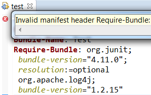
|
| Products can specify OS/arch system properties |
In the Product Editor you can now add system properties that will only apply to a single OS, a single architecture or a
an OS/architecture combination.
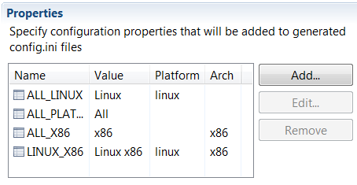
|
| Products can specify OS/arch launch arguments |
In the Product Editor you can now add program and VM arguments to all platforms, a specific operating system or
a specific OS/architecture combination. A preview area shows the complete list of arguments that will apply to the selected
OS and architecture.
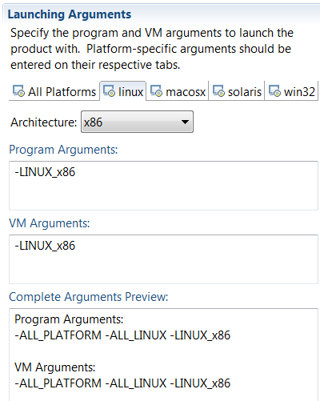
|
| Product can add p2 update sites |
A new page has been added to the Product Editor where you can add p2 repository update sites. When your product
is exported, the list of update sites will be added to the repository list that p2 uses to check for updates. You can
set a site as disabled to have it visible on the Install/Update > Available Software Sites preference page, but it
will not be used during install/update operations unless the user enables it first.
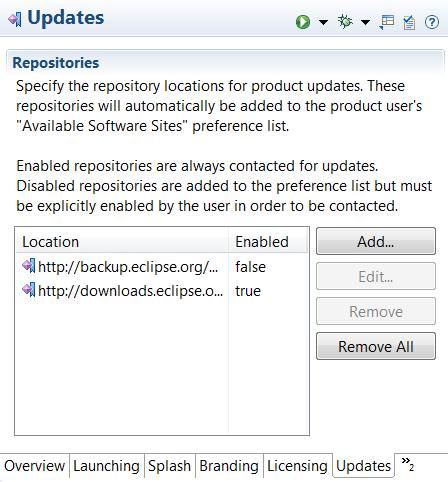
|
| Product can define custom default start levels |
On the Configuration page of the Product Editor, there is a new button: Add Recommended.... When pressed,
a dialog will open offering to add a list of recommended custom start levels to your product definition. This is helpful
for new product developers as they may not be aware that some plug-ins require custom start levels to function correctly. The
operation will not overwrite any existing custom start levels you have set previously.
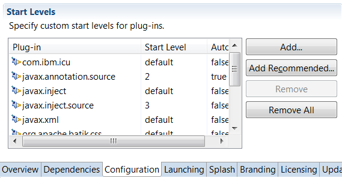
This is the list of recommended start levels currently provided:
org.eclipse.core.runtime@start
org.eclipse.equinox.common@2:start
org.eclipse.equinox.ds@2:start
org.eclipse.equinox.event@2:start
org.eclipse.equinox.simpleconfigurator@1:start
org.eclipse.equinox.p2.reconciler.dropins@start
|
| Plug-in editor indicates deprecated extension elements |
When editing the extensions of a plug-in, you now have a visual indication that an extension element or attribute
has been deprecated.
- Icons in the tree are marked with a warning decoration:
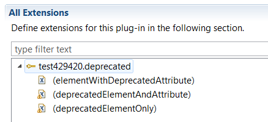
- Menu items are marked with (deprecated):
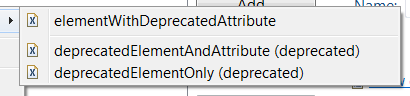
- Details of elements include deprecation information and deprecated attributes are marked with (!):
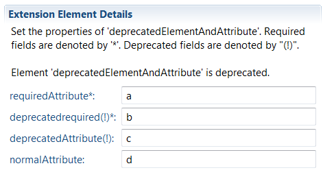
|
Misc |
| Warning if PlatformAdmin is unavailable |
PDE requires the PlatformAdmin service to function. The Equinox Framework has moved this service to the org.eclipse.osgi.compatibility.state
compatibility fragment. If the fragment is not installed, PDE will write an error to the log and will not function correctly. The fragment
is included in the Eclipse SDK, so most users will be unaffected.
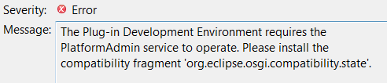
|
| PDE Build moved to JavaSE-1.6 |
The org.eclipse.pde.build bundle now has a bundle required execution environment (BREE) of JavaSE-1.6, matching the Platform Ant bundles.
|
| Target platform content is no longer stored in preferences |
The target platform specified on the Target Platform preference page uses flexible target definitions, stored in .target files,
to specify the set of plug-ins PDE should build against and use to launch applications. However, the content of the target platform
was previously stored in preferences. This could lead to inconsistencies between what you expect to exist in the target platform and
what is actually available. This problem was more noticeable when using a complex target definition containing feature or software
site locations.
In Luna, the target platform information is always created from the target definition chosen on the preference
page. In addition to reducing inconsistencies in the target, there are performance improvements when interacting with the
target.
|
| Launch configurations don't select unbound execution environment |
When creating a new launch configuration, PDE examines the list of plug-ins to be launched and selects the lowest
execution environment (EE) that supports each plug-in's required EE. However, this could lead to selecting an EE
that no installed JRE matches. With no bound JRE, launching with that execution environment would always fail.
Now, when choosing an execution environment, any plug-in that requires an unbound EE will be ignored.
|
| PDE Build depends on org.eclipse.update.configurator |
PDE Build now has a non-optional dependency on org.eclipse.update.configurator [3.1.0,4.0.0). Functionality
from that bundle is required by PDE Build and previously was added via an optional dependency on org.eclipse.core.runtime.compatibility.
If this optional dependency was missing, PDE Build or PDE UI operations could fail with cryptic errors.
|